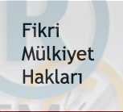
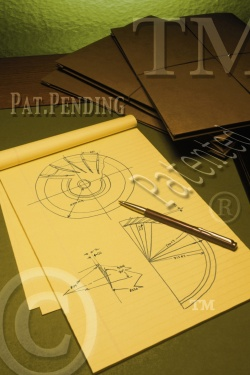

|
Av. Dr. Cahit Suluk
cahitsuluk@yahoo.com
Ekim 2005, Ýstanbul
Not: Ýlk defa TurkCADCAM.net
Dergisi Ocak-Þubat 2006 Sayýsýnda yer almýþ bu yazý,
Eylül 2008'de TurkCADCAM.net portalýndan yayýnlanmaya baþlamýþtýr.
Fikri mülkiyet kavramý; patentler, faydalý modeller, markalar, endüstriyel tasarýmlar, çip tasarýmlarý, yeni bitki çeþitleri, fikir ve sanat eserleri, coðrafi iþaretler, ticaret unvanlarý, iþletme adlarý ve hatta gizli bilgileri kapsayacak kadar geniþ bir anlama sahiptir. Bunlarýn da ötesinde biyoteknoloji, nanoteknoloji, gen teknolojisi, biyoçeþitlilik, geleneksel bilgi ve folklor gibi konular bu alanda deðerlendirilmeye baþlanmýþtýr.
Bugün geliþmiþ ülkeler, fikri mülkiyet haklarýnýn korunmasý için azami gayret sarf etmektedir. Çünkü fikir ve sanat eserleri, patent, marka ve endüstriyel tasarým gibi unsurlar bu ülkelerin ekonomilerinde dikkate deðer bir paya sahiptir. Sözgelimi, dünyanýn en zengin adamý Bill GATES'in sermayesi, özgün fikre dayanan bilgisayar programýdýr. Yine, müzik ve sinema endüstrisinin ekonomideki payý küçümsenemeyecek bir düzeye ulaþmýþtýr. Patent, marka ve özgün tasarým gibi sýnaî mülkiyet haklarý bakýmýndan da benzer deðerlendirmeleri yapmak mümkündür. Örneðin, bugün tüketiciler markalý ürünleri tercih etmektedir. Yine tüketiciler yeniliklere para harcamaya hazýr görünmektedir. Yeniliklerin üretim, mal ve hizmet ya da eðlence ve kültür alanlarýnda yapýldýðýnýn da bir önemi bulunmamaktadýr.
Bir adým daha ileri giderek denebilir ki, bugün fiziki üretim, fikri üretime dayanmaktadýr. Fikri üretimin yapýlmadýðý ülkelerde, fiziki üretim esas itibariyle taklide dayanýr. Geliþmiþ ülkelerin kol gücüne dayanan üretimlerini, geliþmekte olan ülkelere kaydýrmasý bir rastlantý deðildir. Özetle, bugün kazançlý üretim beyin gücüne, yani sistemli bilgiye dayalý üretimdir. Bu nedenle de çaðýmýz bilgi çaðý olarak adlandýrýlmaktadýr.
Bilginin bu kadar önemli olduðu bir ortamda, bilgiyi koruyucu düzenlemelere gidilmesi de doðal karþýlanmalýdýr. Bu koruma, fikri mülkiyet hukukuyla saðlanmaktadýr. Özgün fikrin, ekonomideki payýna baðlý olarak, fikri mülkiyet haklarýnýn korumasýna verilen önem giderek artmaktadýr. Bugün geliþmiþ ülkeler bu hususta oldukça hassas davranmaktadýr. Geliþmekte olan ülkeler ise, bir taraftan geliþmiþ ülkelerin baskýsý, diðer yandan teknoloji transferi ve doðrudan yabancý yatýrýmý çekebilme gibi düþüncelerle, adeta söz konusu haklarý koruma yarýþýna girmiþlerdir. Bu düþünceler ülkemiz bakýmýndan da geçerlidir.
Fikri mülkiyet haklarý uluslararasý sözleþmelerle de koruma altýna alýnmýþtýr. Bu baðlamda özellikle, dünya ticaretine yön vermek düþüncesiyle oluþturulmuþ Dünya Ticaret Örgütünü (DTÖ) kuran 1995 tarihli anlaþmanýn eklerinden biri olan TÝCARETLE BAÐLANTILI FÝKRÝ MÜLKÝYET HAKLARI ANLAÞMASI (TRIPS) burada anýlmalýdýr. Yine ülkemiz bakýmýndan AB ile gümrük birliðini saðlayan 1/95 sayýlý Ortaklýk Konseyi Kararý, bu haklarýn korunmasý bakýmýndan önemli bir kilometre taþýdýr.
Yaþanan bu geliþmelerden ülkemizin ve firmalarýmýzýn etkilenmemesi mümkün deðildir. Öyleyse devlet bir tarafa býrakýlýrsa, büyük, orta ya da küçük ölçekteki tüm firmalarýn artýk bir fikri mülkiyet politikasýnýn olmasý gerektiði söylenebilir. Her firma kendi durumuna ve þartlarýna baðlý olarak, bu alanda bir politika belirlemelidir. Öncelikle firmalar bu alanda yetiþmiþ ya da yetiþtirecekleri kiþileri, büyüklüklerine baðlý olarak ya bünyelerinde istihdam etmeli ya da bu alanda uzman hukukçu ve patent vekili gibi ofislerden danýþmanlýk almalýdýr. Zira marka ve patent gibi haklarýný takip etmeyenler zaman zaman acý sürprizlerle karþýlaþabilmektedir. Sözgelimi, Vakko markasýnýn Amerika'da baþka bir firma adýna tescil edilmiþ olmasý, Avrupa'da Beymen'in benzer bir sorunla karþýlaþmasý, bu sürprizlerden sadece birkaçýdýr. Yine patent metninin kaleme alýnýþýndaki yanlýþlýklar nedeniyle yitirilen buluþlar, bu alanda firmalarca bir politika belirlenerek hayata geçirmelerinin önemini göstermektedir.
Fikir sahibi olunmayan bir hususta politika belirlemek abesle iþtigal olacaktýr. Bu nedenle öncelikle, fikri mülkiyet haklarýnýn ekonomideki yerinin farkýna varýlmalýdýr. Bir buluþçunun, tasarýmcýnýn ya da firmanýn konu hakkýnda sistemli bilgisi bulunmuyorsa, uzun yýllardýr yatýrým yaptýðý markasýný, Ar-Ge ürünü buluþunu ya da özgün tasarýmýný yitirmemesi için bir neden de yoktur. Suçun hukuka, sisteme ya da dýþarýdaki baþka bir unsura atýlmasýyla sorunun çözülemeyeceði kesindir. Elbette ülkemizdeki fikri mülkiyet sisteminde çok ciddi aksaklýklar bulunmaktadýr. Bunlara ilerideki yazýlarýmýzda dikkat çekeceðiz. Ancak burada söylemek istediðimiz; artýk ekonomide yer alan neredeyse tüm aktörlerin, farkýnda olsun olmasýn, fikri mülkiyet kavramýyla bir þekilde temasýnýn olduðu; bu nedenle de bu iliþkinin sistemli bilgi çerçevesinde yönetilmesi (management) gereðidir. |